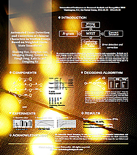
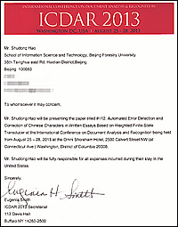

|
[ICDAR 2013]
[Flag of US]  [Poster]  [Letter of Invitation] |
Debut Conference ArticleAutomated Error Detection and Correction of Chinese Characters in Written Essays Based on Weighted Finite-State Transducer (2013)Presented as poster at: 12th International Conference on Document Analysis and Recognition 2013, Washington DC, USA. This is the first time I submitted an acdemic paper to a conference, when I was in the second year of college. I still remember that the frist time I presented my paper to my advisors Dengfeng Ke and Yanyan Xu. They said it was a kind of torture to read my paper :D. So I revised it again and again, modifying stupid mistakes, correcting grammar mistakes and simplifying complicated and convoluted sentences. Maybe what you are reading now is still not a perfect version of this work. Previously, I thought that my work is hard to be explained in less than 5 pages. But now I think, if you have understood the inherence of your work, you do not need to explain it in too many pages. The most exciting part was to attend the conference. I'd like to thank one of my best friends Mingqing Zhang who accompanied with me all the way, from NYC, to Boston, to Washington DC. In the conference, I met a lot of nice person. The wife of the general chair David Dooerman (sorry I have no idea about her name :() is a very outgoing person, who chatted with us a lot, and we spent very good time with her. Also, we met lots of persons who have very insightful opinions and academic talents in this field. I learned a lot. 2013.08.27 is the day when I presented my poster. The background of this poster is my photograph, taken in an Apple Store in Beijing. You can see the lights, and this is the reason why I use this picture: they are like the "states" of WFST in my work. Thought there were not so much people interested in my work, I was still very happy when someone asked me something about my work. When a student, who told us that he was from California, asked that whether he could take a picture of our poster, I was really excited, and of course he could. Maybe he was just interested in the picture, but I will never forget that moment. It seems like that my work was appreciated. Finally I'd like to thank all my co-workers also friends who have ever helped me lot. Also, it's very thankful for the generous financial support from Professor Hengli Peng and Kaile Su. The biggest supports are from my advisors Dengfeng Ke and Yanyan Xu. I wouldn't stand on this stage without you.
|